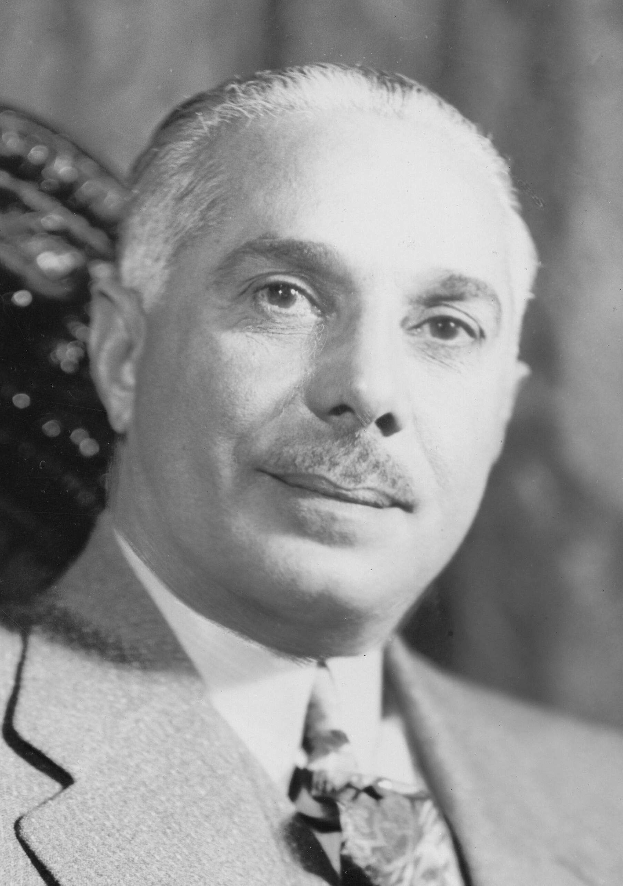

Profiles · Dominican RepublicPerfiles · República Dominicana
Rafael Leonidas Trujillo
Dictator of the Dominican Republic (1930-1961); commander of the army who took power in 1930 and held it, in person or through chosen presidents, until his assassination.Dictador de la República Dominicana (1930-1961); comandante del ejército que tomó el poder en 1930 y lo retuvo, en persona o mediante presidentes escogidos, hasta su asesinato.
Also printed as: Rafael L. Trujillo · Rafael L. Trujillo Molina · Rafael Leonidas Trujillo y MolinaTambién impreso como: Rafael L. Trujillo · Rafael L. Trujillo Molina · Rafael Leonidas Trujillo y Molina
Trujillo rose through the constabulary the United States occupation created, and by 1930 he commanded the army. When the Estrella Ureña rising forced President Vásquez out, Trujillo's troops stood aside, and within months the army chief was president. He ruled for thirty-one years, directly or through presidents he chose, renamed the capital Ciudad Trujillo, and built a police state whose reach the record follows everywhere: the 1937 massacre of Haitians on the border, the disappearance of the critic Jesús de Galíndez in New York, and a cult that styled him Generalísimo and Benefactor. A group of Dominicans ambushed and killed him on May 30, 1961, and the regime built around his person collapsed within the year.Trujillo ascendió por la guardia nacional que creó la ocupación de los Estados Unidos, y en 1930 comandaba el ejército. Cuando el levantamiento de Estrella Ureña forzó la salida del presidente Vásquez, las tropas de Trujillo se mantuvieron al margen, y en pocos meses el jefe del ejército era presidente. Gobernó treinta y un años, directamente o mediante presidentes escogidos por él, rebautizó la capital como Ciudad Trujillo y construyó un Estado policíaco cuyo peso el archivo sigue en todas partes: la masacre de haitianos en la frontera en 1937, la desaparición del crítico Jesús de Galíndez en Nueva York y un culto que lo proclamaba Generalísimo y Benefactor. Un grupo de dominicanos lo emboscó y lo mató el 30 de mayo de 1961, y el régimen construido alrededor de su persona se desplomó en menos de un año.

The army chief who stood asideEl jefe del ejército que se mantuvo al margen
The American record of Rafael Trujillo opens in the last week of February 1930, with the capital falling. Insurgents had marched into Santo Domingo demanding the resignation of President Horacio Vásquez, and everything depended on the man who held the Ozama fortress. The Evening Star reported on February 28, 1930 that Army Commander General Trujillo held the fort before joining the peace talks at the American Legation. The Milwaukee Leader, the same day, counted 2,500 well-disciplined troops under Trujillo who "rested on their arms in an attitude of neutrality." The Indianapolis Times, also on February 28, saw the shape of what was coming: his "neutral attitude in the crisis has commended itself across the country."El registro estadounidense de Rafael Trujillo se abre en la última semana de febrero de 1930, con la capital cayendo. Los insurgentes habían entrado en Santo Domingo exigiendo la renuncia del presidente Horacio Vásquez, y todo dependía del hombre que ocupaba la fortaleza Ozama. El Evening Star informó el 28 de febrero de 1930 que el comandante del ejército, el general Trujillo, sostuvo el fuerte antes de sumarse a las conversaciones de paz en la legación estadounidense. The Milwaukee Leader, el mismo día, contó 2.500 tropas bien disciplinadas bajo Trujillo que «descansaban sobre sus armas en actitud de neutralidad». The Indianapolis Times, también el 28 de febrero, vio la forma de lo que venía: su «actitud neutral en la crisis se ha recomendado en todo el país».
The neutrality was the campaign. In March, Estrella Ureña — the rising's own leader — assumed the provisional presidency after negotiating with Trujillo, who, the Springfield Weekly Republican noted on March 6, 1930, "declined consideration for the presidency." By the election of May 16 the opposition alliance had withdrawn its candidates, and Trujillo and Estrella Ureña were elected unopposed, as the Douglas Daily Dispatch reported on May 17, 1930. The defeated rival Federico Velásquez was in jail on charges of fomenting revolution — and had been offered the treasury portfolio in Trujillo's cabinet, the same paper reported on May 21, 1930. On August 16, 1930, The Bismarck Tribune recorded the result: "General Rafael L. Trujillo, 37 years old and trained in the United States Marines, was inducted into office that day as president of the Dominican Republic."La neutralidad fue la campaña. En marzo, Estrella Ureña — el propio jefe del levantamiento — asumió la presidencia provisional tras negociar con Trujillo, que, según anotó el Springfield Weekly Republican el 6 de marzo de 1930, «declinó ser considerado para la presidencia». Para las elecciones del 16 de mayo la alianza opositora había retirado a sus candidatos, y Trujillo y Estrella Ureña fueron elegidos sin oposición, como informó el Douglas Daily Dispatch el 17 de mayo de 1930. El rival derrotado, Federico Velásquez, estaba en la cárcel acusado de fomentar una revolución — y le habían ofrecido la cartera de Hacienda en el gabinete de Trujillo, según informó el mismo periódico el 21 de mayo de 1930. El 16 de agosto de 1930, The Bismarck Tribune registró el resultado: «El general Rafael L. Trujillo, de 37 años y entrenado en los Marines de los Estados Unidos, fue juramentado ese día como presidente de la República Dominicana».
The hurricaneEl huracán
Three weeks after the inauguration, on September 3, 1930, a hurricane tore the capital apart. The Brownsville Herald reported on September 4 that "President Rafael Trujillo took personal charge of relief work in Santo Domingo and called out the entire army." The Bismarck Tribune, on September 5, had him telling the American minister that 800 dead had been counted; a week later the Springfield Weekly Republican, on September 11, carried his cable putting the toll at 2,000 dead buried or burned and more than 5,000 injured. Across the United States, photograph captions showed the new president personally directing the relief — The Imperial Valley Press ran one on September 10, 1930. The Evening Star's own retrospective, written at his death on June 1, 1961, drew the line plainly: after winning the presidency in 1930, Trujillo "consolidated absolute power following a devastating hurricane." The storm gave the army chief a ruined capital to rebuild in his own image, and the American press watched him do it.Tres semanas después de la juramentación, el 3 de septiembre de 1930, un huracán destrozó la capital. El Brownsville Herald informó el 4 de septiembre que «el presidente Rafael Trujillo tomó el mando personal de los trabajos de auxilio en Santo Domingo y movilizó a todo el ejército». The Bismarck Tribune, el 5 de septiembre, lo citó diciendo al ministro estadounidense que se habían contado 800 muertos; una semana después, el Springfield Weekly Republican, el 11 de septiembre, publicó su cable con una cifra de 2.000 muertos enterrados o quemados y más de 5.000 heridos. En todo Estados Unidos, los pies de foto mostraban al nuevo presidente dirigiendo personalmente el auxilio: The Imperial Valley Press publicó una el 10 de septiembre de 1930. La retrospectiva del propio Evening Star, escrita a su muerte el 1 de junio de 1961, trazó la línea sin rodeos: tras ganar la presidencia en 1930, Trujillo «consolidó el poder absoluto después de un huracán devastador». La tormenta le dio al jefe del ejército una capital en ruinas para reconstruir a su imagen, y la prensa estadounidense lo vio hacerlo.
Ciudad TrujilloCiudad Trujillo
By the middle of the decade the American papers were recording the cult as a matter of routine. The capital had been renamed for him, and an Evening Star philatelic column on February 7, 1937 noted the new postage stamps issued to draw attention to the change. His birthday was a diplomatic occasion in Washington, where the Dominican minister gave a reception for it (The Washington Times, October 21, 1936), and at home he marked it by presenting a rock-crystal urn for the ashes of Christopher Columbus (Evening Star, October 25, 1936). A laudatory volume, "President Trujillo, His Work and the Dominican Republic," was published in Washington and noticed in the Evening Star on December 5, 1936; the March of Time newsreel carried his dictatorship into American cinemas (Brownsville Herald, July 12, 1936). The Evening Star's profile of October 24, 1937 supplied the authorized outline: he had begun as a telegraph operator in his hometown of San Cristóbal and risen to colonel at the head of the Marine-trained constabulary, and was credited with roads, highways, bridges and port works built "without foreign loans."A mediados de la década, los periódicos estadounidenses registraban el culto como un asunto de rutina. La capital había sido rebautizada con su nombre, y una columna filatélica del Evening Star del 7 de febrero de 1937 anotó los nuevos sellos emitidos para llamar la atención sobre el cambio. Su cumpleaños era una ocasión diplomática en Washington, donde el ministro dominicano ofrecía una recepción por él (The Washington Times, 21 de octubre de 1936), y en su país lo marcó presentando una urna de cristal de roca para las cenizas de Cristóbal Colón (Evening Star, 25 de octubre de 1936). Un volumen laudatorio, «President Trujillo, His Work and the Dominican Republic», se publicó en Washington y fue reseñado en el Evening Star el 5 de diciembre de 1936; el noticiario March of Time llevó su dictadura a los cines estadounidenses (Brownsville Herald, 12 de julio de 1936). El perfil del Evening Star del 24 de octubre de 1937 ofreció el esbozo autorizado: había empezado como telegrafista en su natal San Cristóbal y ascendido a coronel al frente de la guardia entrenada por los Marines, y se le atribuían carreteras, puentes y obras portuarias construidas «sin préstamos extranjeros».
In January 1938 he announced he would not seek reelection and endorsed Dr. Jacinto B. Peynado (Evening Star, January 9, 1938); Peynado was inaugurated that August with Trujillo remaining, in The Washington Times' phrase of August 16, 1938, the republic's political "strong man." His 1939 visit to Washington showed both faces of his American standing at once. The Washington Daily News of July 1, 1939 set out the honors: an invitation from the Marine Corps commandant, a Senate luncheon, calls on Secretary Hull and President Roosevelt. The Evening Star profiled him on July 5, 1939 with the other face showing: "Even if he is denounced as a tyrant and accused of the massacre of thousands of Haitians two years ago," it began, before crediting his administrative energy. Columnist Raymond Clapper, in The Washington Daily News of July 15, 1939, rebuked a congressman's praise of a Dominican "golden age," citing first-hand reporting of the border atrocities; and The Waterbury Democrat, on July 17, 1939, described the Dominican Legation under guard during the visit, detectives examining grocery deliveries and camera cases for hidden bombs.En enero de 1938 anunció que no buscaría la reelección y respaldó al Dr. Jacinto B. Peynado (Evening Star, 9 de enero de 1938); Peynado fue juramentado ese agosto, con Trujillo permaneciendo, en la frase de The Washington Times del 16 de agosto de 1938, como el «hombre fuerte» político de la república. Su visita a Washington en 1939 mostró a la vez las dos caras de su posición en Estados Unidos. The Washington Daily News del 1 de julio de 1939 enumeró los honores: una invitación del comandante del Cuerpo de Marines, un almuerzo en el Senado, visitas al secretario Hull y al presidente Roosevelt. El Evening Star lo perfiló el 5 de julio de 1939 mostrando la otra cara: «Aunque sea denunciado como tirano y acusado de la masacre de miles de haitianos hace dos años», comenzaba, antes de reconocer su energía administrativa. El columnista Raymond Clapper, en The Washington Daily News del 15 de julio de 1939, reprochó los elogios de un congresista a una «edad de oro» dominicana, citando reportajes de primera mano sobre las atrocidades fronterizas; y The Waterbury Democrat, el 17 de julio de 1939, describió la legación dominicana bajo vigilancia durante la visita, con detectives examinando entregas de comestibles y estuches de cámaras en busca de bombas.
The borderLa frontera
In October 1937 the killing began along the Haitian border, and the American papers counted it in the open. The Washington Daily News reported on November 15, 1937 that President Roosevelt had offered the good offices of the United States, Mexico and Cuba to mediate a crisis "stemming from the alleged slaughter of 5000 Haitians the previous month." Its report of November 24, 1937 went further: Haitians had been "slaughtered on successive days and nights over a wide area well inside Dominican territory," and it printed a communication of October 16 recounting that Trujillo, attending a dance in his honor during a trip to the Cibao, was informed there of cattle stealing by Haitians. Refugees told of fifty Haitians marched to the wharf at Monte Cristi by Dominican rural police and thrown into the sea (The Washington Daily News, December 22, 1937). Haiti's minister Élie Lescot cited refugee reports of 12,168 killed (Atlanta Daily World, December 27, 1937); The Gazette, on January 1, 1938, put official estimates "up to 12,000" slain since October. Haiti's President Sténio Vincent answered that the border question had been settled by treaty two years earlier and that Santo Domingo should have used diplomatic channels rather than violence (Evening Star, December 8, 1937). Trujillo's own reply, on December 22, was a proposed "pact of honor" with Vincent declaring that the October events would never cause war between the two nations (Evening Star, December 27, 1937).En octubre de 1937 comenzó la matanza a lo largo de la frontera haitiana, y los periódicos estadounidenses la contaron abiertamente. The Washington Daily News informó el 15 de noviembre de 1937 que el presidente Roosevelt había ofrecido los buenos oficios de Estados Unidos, México y Cuba para mediar en una crisis «derivada de la alegada matanza de 5.000 haitianos el mes anterior». Su informe del 24 de noviembre de 1937 fue más lejos: los haitianos habían sido «masacrados en días y noches sucesivos en una amplia zona bien adentro del territorio dominicano», e imprimió una comunicación del 16 de octubre según la cual Trujillo, asistiendo a un baile en su honor durante un viaje al Cibao, fue informado allí de robos de ganado por haitianos. Los refugiados contaron que cincuenta haitianos fueron llevados al muelle de Monte Cristi por la policía rural dominicana y arrojados al mar (The Washington Daily News, 22 de diciembre de 1937). El ministro haitiano Élie Lescot citó informes de refugiados con 12.168 muertos (Atlanta Daily World, 27 de diciembre de 1937); The Gazette, el 1 de enero de 1938, situó las estimaciones oficiales en «hasta 12.000» muertos desde octubre. El presidente haitiano Sténio Vincent respondió que la cuestión fronteriza se había zanjado por tratado dos años antes y que Santo Domingo debió usar los canales diplomáticos en vez de la violencia (Evening Star, 8 de diciembre de 1937). La respuesta del propio Trujillo, el 22 de diciembre, fue proponer a Vincent un «pacto de honor» declarando que los hechos de octubre nunca causarían una guerra entre las dos naciones (Evening Star, 27 de diciembre de 1937).
The open doorLa puerta abierta
The same regime that sealed the border against Haitians opened the republic's door to Europe's refugees, and the American press recorded that, too, in detail. The Southern Jewish Weekly reported on November 3, 1939 that the Dominican Republic had become "the first nation to open its borders to the colonization of European refugees under intergovernmental auspices," with Trujillo announcing that five hundred families would be admitted immediately and the head tax waived. The settlement contract, signed by February 1940, gave the colonists land near Sosúa and guaranteed full Dominican citizenship, with organizers envisioning homes for up to one hundred thousand (Henderson Daily Dispatch, February 3, 1940). A profile in The Frontier on February 22, 1940 named the paradox directly: critics compared Trujillo to Hitler while he signed the refugee accord and donated twenty-four thousand acres of his own land. By January 1941 the colony at Sosúa had passed one thousand persons (Evening Star, January 3, 1941), and Trujillo added a further donation of fifty thousand acres beside the original Sosúa estate (Evening Star, January 11, 1941).El mismo régimen que selló la frontera contra los haitianos abrió la puerta de la república a los refugiados de Europa, y la prensa estadounidense también lo registró, con detalle. The Southern Jewish Weekly informó el 3 de noviembre de 1939 que la República Dominicana se había convertido en «la primera nación en abrir sus fronteras a la colonización de refugiados europeos bajo auspicios intergubernamentales», con Trujillo anunciando que quinientas familias serían admitidas de inmediato y que se eximiría el impuesto de entrada. El contrato de colonización, firmado para febrero de 1940, dio a los colonos tierra cerca de Sosúa y garantizó la plena ciudadanía dominicana, con organizadores que imaginaban hogares para hasta cien mil personas (Henderson Daily Dispatch, 3 de febrero de 1940). Un perfil en The Frontier del 22 de febrero de 1940 nombró la paradoja sin rodeos: los críticos comparaban a Trujillo con Hitler mientras él firmaba el acuerdo de refugiados y donaba veinticuatro mil acres de su propia tierra. Para enero de 1941 la colonia de Sosúa había pasado de mil personas (Evening Star, 3 de enero de 1941), y Trujillo añadió una nueva donación de cincuenta mil acres junto a la finca original de Sosúa (Evening Star, 11 de enero de 1941).
In the autumn of 1940 he came to Washington as his country's Ambassador Extraordinary and did what no Dominican ruler before him had done: The Gazette reported on October 12, 1940 that Secretary of State Hull and Trujillo had signed a convention returning to Santo Domingo the right to collect its own customs. The customs receivership — the American-run revenue machine that runs through the first decades of this archive, and through the career of Minister Sullivan a generation earlier — ended with the signature of the man the machine's era had produced. Days before, the Evening Star of October 1, 1940 had recorded his farewell call on President Roosevelt.En el otoño de 1940 vino a Washington como embajador extraordinario de su país e hizo lo que ningún gobernante dominicano había hecho antes: The Gazette informó el 12 de octubre de 1940 que el secretario de Estado Hull y Trujillo habían firmado una convención que devolvía a Santo Domingo el derecho de recaudar sus propias aduanas. La receptoría de aduanas — la máquina recaudadora administrada por estadounidenses que recorre las primeras décadas de este archivo, y la carrera del ministro Sullivan una generación antes — terminó con la firma del hombre que la época de esa máquina había producido. Días antes, el Evening Star del 1 de octubre de 1940 había registrado su visita de despedida al presidente Roosevelt.
The critic who vanishedEl crítico que desapareció
On March 12, 1956, Jesús de Galíndez — a Basque scholar lecturing at Columbia University and the regime's most learned critic — vanished in New York. The Evening Star of May 21, 1956 recorded the pressure on the Attorney General to exhaust every effort to solve the disappearance. The Key West Citizen, on May 30, 1956, carried the report that Galíndez had been thrown alive into the furnace of a Dominican freighter; the Dominican consul general called the story "a terrible hoax" (Evening Star, May 31, 1956), and New York detectives who searched the freighter Fundación for four hours found, as Newsday put it on June 7, 1956, "not a single solid clue." In February 1957 Life magazine connected the disappearance to a young American pilot, Gerald Murphy, who had himself vanished in the Dominican Republic; Representative Porter took the House floor to demand an inquiry (Evening Star, February 20 and February 28, 1957). The regime's answer — a confession note attributed to a Dominican pilot who had supposedly killed Murphy in a quarrel — was branded a forgery by the United States government (Diario Las Américas, July 17, 1957). Edward R. Murrow's radio documentary that spring named the alleged go-between as a man in Trujillo's pay (Evening Star, May 21, 1957), and the Evening Star of August 4, 1957 excerpted Galíndez's own book, with its description of the republic as "a great farm that belongs to Trujillo." A former FBI agent, John Frank, was convicted in December 1957 of acting as an unregistered agent of the Dominican Republic (Evening Star, December 10, 1957). The inquiry Trujillo commissioned for himself ended the following June: the American lawyer Morris Ernst cleared him of the disappearance — in a report financed by the Generalissimo (Diario Las Américas, June 3, 1958).El 12 de marzo de 1956, Jesús de Galíndez — un académico vasco que enseñaba en la Universidad de Columbia y el crítico más erudito del régimen — desapareció en Nueva York. El Evening Star del 21 de mayo de 1956 registró la presión sobre el fiscal general para agotar todos los esfuerzos por resolver la desaparición. The Key West Citizen, el 30 de mayo de 1956, trajo el informe de que Galíndez había sido arrojado vivo al horno de un carguero dominicano; el cónsul general dominicano calificó la historia de «un terrible engaño» (Evening Star, 31 de mayo de 1956), y los detectives de Nueva York que registraron el carguero Fundación durante cuatro horas no encontraron, como lo puso Newsday el 7 de junio de 1956, «ni una sola pista sólida». En febrero de 1957 la revista Life conectó la desaparición con un joven piloto estadounidense, Gerald Murphy, que había desaparecido a su vez en la República Dominicana; el representante Porter ocupó el hemiciclo para exigir una investigación (Evening Star, 20 y 28 de febrero de 1957). La respuesta del régimen — una nota de confesión atribuida a un piloto dominicano que supuestamente había matado a Murphy en una riña — fue calificada de falsificación por el gobierno de Estados Unidos (Diario Las Américas, 17 de julio de 1957). El documental radiofónico de Edward R. Murrow esa primavera señaló como intermediario a un hombre a sueldo de Trujillo (Evening Star, 21 de mayo de 1957), y el Evening Star del 4 de agosto de 1957 extractó el propio libro de Galíndez, con su descripción de la república como «una gran finca que pertenece a Trujillo». Un exagente del FBI, John Frank, fue condenado en diciembre de 1957 por actuar como agente no registrado de la República Dominicana (Evening Star, 10 de diciembre de 1957). La investigación que Trujillo encargó para sí mismo concluyó el junio siguiente: el abogado estadounidense Morris Ernst lo exoneró de la desaparición — en un informe financiado por el Generalísimo (Diario Las Américas, 3 de junio de 1958).
The closing viseEl cerco se cierra
The end began with arrests. In January 1960 the regime announced it had smashed a plot against Trujillo's life; the Atlanta Daily World reported on February 6, 1960 that perhaps 1,500 persons had been herded into a countryside detention camp, and the Evening Star of February 12, 1960 counted 120 already sentenced to thirty-year terms. Trujillo told an interviewer the arrested were people "deluded by Communists" who would eventually be pardoned (Evening Star, February 14, 1960). In May, José Almoina — who said he had been Trujillo's secretary — was shot in Mexico City and accused gunmen hired by the dictator (The Key West Citizen, May 6, 1960). Then, on June 24, 1960, a bomb nearly killed Venezuela's President Betancourt. A five-nation inter-American committee found the conspirators had been received by high Dominican officials, had met Trujillo himself, and kept contact with his intelligence chief (Evening Star, August 12, 1960). At San José the hemisphere's foreign ministers convicted his regime of aggression and voted sanctions (Evening Star, August 21, 1960); Undersecretary Dillon called Trujillo before Congress "a tyrant who has tortured and murdered political opponents" (Evening Star, August 24, 1960), and the United States severed diplomatic relations (Atlanta Daily World, August 27, 1960). At home the regime answered with spectacle: some 60,000 women paraded through the capital in his support, his wife and daughter among them (Evening Star, September 5, 1960), and in December he had himself elected governor of Santiago province, the Evening Star of December 17, 1960 explained, "to demonstrate his popularity." In April 1961 the quarrel with the Church turned violent, as pro-Trujillo mobs wrecked Bishop Reilly's residence at San Juan de la Maguana and drove him to the capital (Evening Star, April 14, 1961).El fin comenzó con arrestos. En enero de 1960 el régimen anunció que había desmantelado un complot contra la vida de Trujillo; el Atlanta Daily World informó el 6 de febrero de 1960 que quizás 1.500 personas habían sido llevadas a un campo de detención en el campo, y el Evening Star del 12 de febrero de 1960 contó 120 ya condenadas a penas de treinta años. Trujillo dijo a un entrevistador que los arrestados eran personas «engañadas por los comunistas» que con el tiempo serían indultadas (Evening Star, 14 de febrero de 1960). En mayo, José Almoina — que decía haber sido secretario de Trujillo — fue baleado en Ciudad de México y acusó a pistoleros a sueldo del dictador (The Key West Citizen, 6 de mayo de 1960). Entonces, el 24 de junio de 1960, una bomba casi mata al presidente venezolano Betancourt. Un comité interamericano de cinco naciones encontró que los conspiradores habían sido recibidos por altos funcionarios dominicanos, se habían reunido con el propio Trujillo y mantenían contacto con su jefe de inteligencia (Evening Star, 12 de agosto de 1960). En San José, los cancilleres del hemisferio condenaron a su régimen por agresión y votaron sanciones (Evening Star, 21 de agosto de 1960); el subsecretario Dillon llamó a Trujillo ante el Congreso «un tirano que ha torturado y asesinado a opositores políticos» (Evening Star, 24 de agosto de 1960), y Estados Unidos rompió relaciones diplomáticas (Atlanta Daily World, 27 de agosto de 1960). En casa, el régimen respondió con espectáculo: unas 60.000 mujeres desfilaron por la capital en su apoyo, su esposa y su hija entre ellas (Evening Star, 5 de septiembre de 1960), y en diciembre se hizo elegir gobernador de la provincia de Santiago, según explicó el Evening Star del 17 de diciembre de 1960, «para demostrar su popularidad». En abril de 1961 la disputa con la Iglesia se volvió violenta, cuando turbas pro-Trujillo destrozaron la residencia del obispo Reilly en San Juan de la Maguana y lo obligaron a huir a la capital (Evening Star, 14 de abril de 1961).
On the night of May 30, 1961, on the highway out of the capital, Dominican gunmen ended it. The Nome Nugget of May 31, 1961 carried the first wire word — communications cut, the State Department holding unconfirmed reports that the 69-year-old dictator had been assassinated — and the Evening Star's editorial of June 1, 1961 measured the whole arc in one line: the assassination "ended thirty-one years of dictatorial rule." What followed in the record is the regime coming apart at the speed of its founder's cult. President Balaguer dismissed the feared intelligence chief Abbes García (Evening Star, June 4, 1961); in October the dead man's son Ramfis, commanding the armed forces, declared the military would not take orders from civilian authorities (Evening Star, October 13, 1961); in November the uncles returned, Ramfis resigned, and the family departed into exile (Evening Star, November 19 and 20, 1961). The Key West Citizen of November 24, 1961 closed the file: the last relatives had landed in Miami, among them Trujillo's ninety-six-year-old mother, while back home "tanks patrolled the streets of the newly renamed capital of Santo Domingo" and crowds looted the family's properties. The city had its name back. The archive's largest file ends there.En la noche del 30 de mayo de 1961, en la carretera a la salida de la capital, pistoleros dominicanos lo terminaron. The Nome Nugget del 31 de mayo de 1961 trajo la primera noticia por cable — comunicaciones cortadas, el Departamento de Estado con informes no confirmados de que el dictador de 69 años había sido asesinado — y el editorial del Evening Star del 1 de junio de 1961 midió todo el arco en una línea: el asesinato «puso fin a treinta y un años de gobierno dictatorial». Lo que siguió en el registro es el régimen deshaciéndose a la velocidad del culto a su fundador. El presidente Balaguer destituyó al temido jefe de inteligencia Abbes García (Evening Star, 4 de junio de 1961); en octubre, Ramfis, el hijo del muerto, al mando de las fuerzas armadas, declaró que los militares no recibirían órdenes de las autoridades civiles (Evening Star, 13 de octubre de 1961); en noviembre los tíos regresaron, Ramfis renunció y la familia partió al exilio (Evening Star, 19 y 20 de noviembre de 1961). The Key West Citizen del 24 de noviembre de 1961 cerró el expediente: los últimos familiares habían aterrizado en Miami, entre ellos la madre de Trujillo, de noventa y seis años, mientras en casa «los tanques patrullaban las calles de la capital, rebautizada de nuevo como Santo Domingo», y las multitudes saqueaban las propiedades de la familia. La ciudad había recuperado su nombre. El expediente más grande del archivo termina ahí.
In this archiveEn este archivo
Nine reports, from the first to the last, that carry his story in this collection:Nueve reportajes, del primero al último, que cargan su historia en esta colección:
The Indianapolis times describes a triangular political dramaThe Indianapolis Times describe un drama político triangular
The Indianapolis times describes a triangular political drama in which President Horacio Vasquez, Revolutionary Chief Rafael Estrella Urena, andThe Indianapolis times describe un drama político triangular en el que el presidente Horacio Vasquez, el jefe revolucionario Rafael Estrella Urena y
An August 16 dispatch from Santo Domingo in The Bismarck tribuneUn despacho del 16 de agosto desde Santo Domingo en The Bismarck Tribune
An August 16 dispatch from Santo Domingo in The Bismarck tribune reports that General Rafael L. Trujillo, 37 years old and trained in the UnitedUn despacho del 16 de agosto desde Santo Domingo en The Bismarck tribune informa que el general Rafael L. Trujillo, de 37 años de edad y entrenado en
Following a hurricane with winds estimated around 150 milesTras un huracán con vientos estimados en alrededor de 150 millas
Following a hurricane with winds estimated around 150 miles an hour, President Rafael Trujillo took personal charge of relief work in Santo DomingoTras el paso de un huracán con vientos estimados en unas 150 millas por hora, el presidente Rafael Trujillo asumió personalmente la dirección de las
Reports published in The Washington daily news state that HaitiansInformes publicados en The Washington Daily News afirman que los haitianos
Reports published in The Washington daily news state that Haitians were slaughtered on successive days and nights over a wide area well insideInformes publicados en The Washington daily news señalan que ciudadanos haitianos fueron masacrados durante días y noches sucesivos en una amplia
A settlement contract signed in the presence of James N. RosenbergUn contrato de colonización firmado en presencia de James N. Rosenberg
A settlement contract signed in the presence of James N. Rosenberg, president of the Dominican Republic Settlement Association, establishes terms forUn contrato de colonización firmado en presencia de James N. Rosenberg, presidente de la Dominican Republic Settlement Association, establece los
A dispatch from Washington reports that Secretary of State HullUn despacho de Washington informa que el secretario de Estado Hull
A dispatch from Washington reports that Secretary of State Hull and Dominican Ambassador Extraordinary Dr. Rafael Trujillo signed a conventionUn despacho desde Washington informa que el secretario de Estado Hull y el embajador extraordinario dominicano, doctor Rafael Trujillo, firmaron una
On May 1, Mr. Roosevelt asked Attorney General Brownell to exertEl 1 de mayo, el Sr. Roosevelt pidió al fiscal general Brownell que ejerciera
On May 1, Mr. Roosevelt asked Attorney General Brownell to exert and exhaust every effort to solve the disappearance of Mr. Galindez, a DominicanEl 1 de mayo, el señor Roosevelt solicitó al fiscal general Brownell agotar todos los esfuerzos para esclarecer la desaparición del señor Galíndez,
Foreign ministers at San José convicted Generalissimo Rafael Trujillo's Dominican regime of aggressionLos cancilleres en San José condenaron por agresión al régimen dominicano del generalísimo Rafael Trujillo
Foreign ministers at San José convicted Generalissimo Rafael Trujillo's Dominican regime of aggression against Venezuela for supporting a recent plotLos ministros de Relaciones Exteriores en San José condenaron al régimen dominicano del generalísimo Rafael Trujillo por agresión contra Venezuela al
Tanks patrolled the streets of the newly renamed capital of Santo DomingoLos tanques patrullaron las calles de la capital, rebautizada de nuevo como Santo Domingo
Tanks patrolled the streets of the newly renamed capital of Santo Domingo and jet aircraft roared overhead on Thursday night to disperse crowdsTanques patrullaron las calles de la recién rebautizada capital de Santo Domingo y aviones de combate sobrevolaron la ciudad la noche del jueves para
Articles about Rafael TrujilloArtículos sobre Rafael Trujillo · Springfield Weekly Republican, February 27, 1930Springfield Weekly Republican, 27 de febrero de 1930
This profile is sewn entirely from the articles in this archive. Every episode is cited to the newspaper and the date that reported it; where the papers disagree — as they sometimes do — the disagreement is left standing as part of the record. This archive does not settle his life before 1930: its record of him opens in February of that year, with the capital already falling.Este perfil está cosido por completo de los artículos de este archivo. Cada episodio se cita con el periódico y la fecha que lo reportó; donde los periódicos discrepan — como ocurre a veces — la discrepancia se deja en pie como parte del registro. Este archivo no resuelve su vida antes de 1930: su registro de él se abre en febrero de ese año, con la capital ya cayendo.